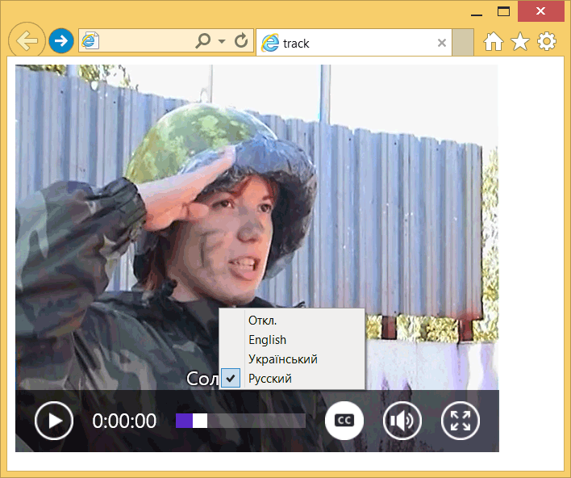

Элемент <track>
| Internet Explorer | Chrome | Opera | Safari | Firefox |
| 10 | 18 | 15 | 6 | 31 |
| Android | Firefox Mobile | Opera Mobile | Safari Mobile |
| 4.4 | 31 | 24 | 7.1 |
Позволяет авторам указать текстовую дорожку для медийных элементов <audio> и <video>. Такая дорожка обычно содержит субтитры на разных языках, комментарии, заголовки и др.
Синтаксис
<audio>
<track kind | src | srclang | label | default>
</audio>
<video>
<track kind | src | srclang | label | default>
</video>Закрывающий тег
Аттрибуты
- kind
- Указывает тип дорожки, возможные варианты перечислены в табл. 1.
- src
- Путь к файлу с дорожкой.
- srclang
- Язык дорожки. См. коды языков.
- label
- Отображаемое название дорожки. Если этот атрибут не указан, браузер станет использовать значение, которое применяется у него по умолчанию, например «untitled1».
- default
- Наличие этого атрибута указывает, что данная дорожка предпочтительна и должна быть выбрана по умолчанию. Только одна дорожка может иметь атрибут default.
| Значение | Предназначение | Описание |
|---|---|---|
| subtitles | Субтитры | Предназначены для дублирования звуковой дорожки фильма в виде текста на языке оригинала для глухих людей. Также могут содержать перевод на другие языки для тех, кто не знаком с языком оригинала. Текст субтитров выводится поверх видео. |
| captions | Заголовки | Дублирование диалогов, звуковых эффектов, музыкального сопровождения в виде текста для тех случаев, когда звук недоступен или для глухих пользователей. Выводится поверх видео, при этом помечается, что подходит для плохо слышащих людей. |
| descriptions | Описание | Звуковое описание происходящего в видео для тех случаев, когда изображение недоступно или для слепых людей. |
| chapters | Главы | Названия глав используемые для быстрой навигации по видео или аудио. Отображаются в виде списка. |
| metadata | Метаданные | Предназначены для использования скриптами и не отображаются в браузере. |
Пример
<!DOCTYPE html>
<html>
<head>
<meta charset="utf-8">
<title>track</title>
</head>
<body>
<video width="500" height="400" controls>
<track kind="subtitles" src="video/jane.en.vtt" srclang="en" label="English">
<track kind="subtitles" src="video/jane.ua.vtt" srclang="ua" label="Український">
<track kind="subtitles" src="video/jane.ru.vtt" srclang="ru" label="Русский" default>
<source src="video/jane.ogv" type='video/ogg; codecs="theora, vorbis"'>
<source src="video/jane.mp4" type='video/mp4; codecs="avc1.42E01E, mp4a.40.2"'>
<source src="video/jane.webm" type='video/webm; codecs="vp8, vorbis"'>
Элемент video не поддерживается вашим браузером.
</video>
</body>
</html>Результат данного примера показан на рис. 1.

Рис. 1. Видео с субтитрами
Содержимое файла jane.ru.vtt в формате субтитров VTT приведено ниже.
WEBVTT FILE
00:00.360 --> 00:01.240
Солдат Джейн.
00:01.240 --> 00:02.240
Спасаюсь от радиации.
00:02.240 --> 00:04.000
Арбуз - лучшее средство.Примечание
Браузеры Chrome, Safari, Opera не переключают язык субтитров и из списка используют только нижний.
Firefox не поддерживает формат VTT.
Спецификация ?
| Спецификация | Статус |
|---|---|
| WHATWG HTML Living Standard | Живой стандарт |
| HTML5.1 | Редакторский черновик |
| HTML5 | Рекомендация |
Спецификация
Каждая спецификация проходит несколько стадий одобрения.
- Recommendation (Рекомендация) — спецификация одобрена W3C и рекомендована как стандарт.
- Candidate Recommendation (Возможная рекомендация) — группа, отвечающая за стандарт, удовлетворена, как он соответствует своим целям, но требуется помощь сообщества разработчиков по реализации стандарта.
- Proposed Recommendation (Предлагаемая рекомендация) — на этом этапе документ представлен на рассмотрение Консультативного совета W3C для окончательного утверждения.
- Working Draft (Рабочий проект) — более зрелая версия черновика после обсуждения и внесения поправок для рассмотрения сообществом.
- Editorʼs draft (Редакторский черновик) — черновая версия стандарта после внесения правок редакторами проекта.
- Draft (Черновик спецификации) — первая черновая версия стандарта.
Особняком стоит живой стандарт HTML (Living) — он не придерживается традиционной нумерации версий, поскольку находится в постоянной разработке и обновляется регулярно.